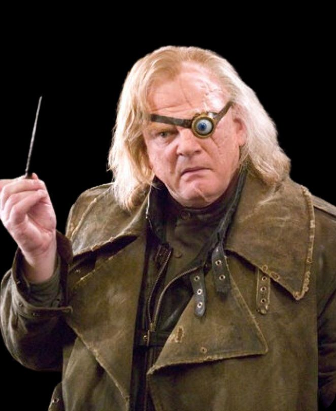
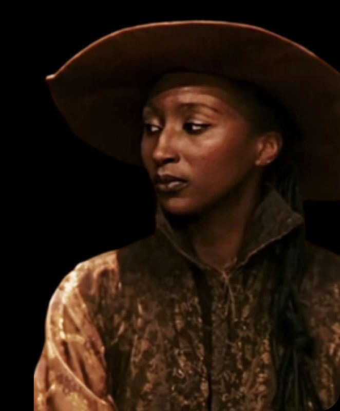
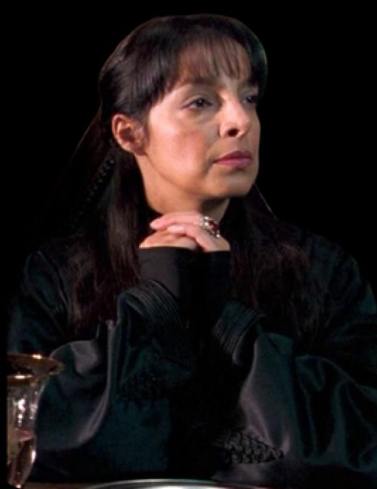
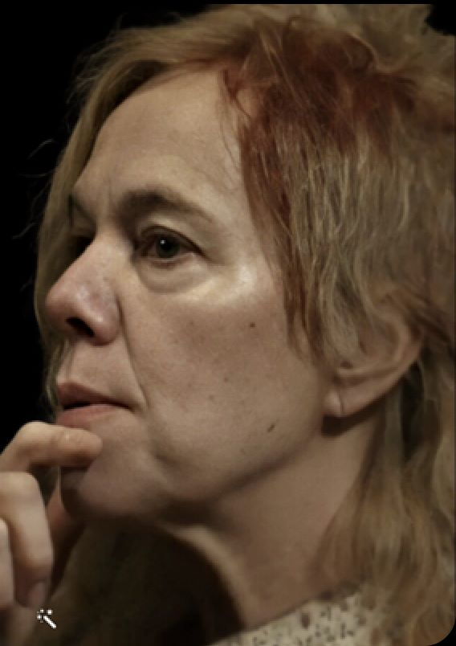
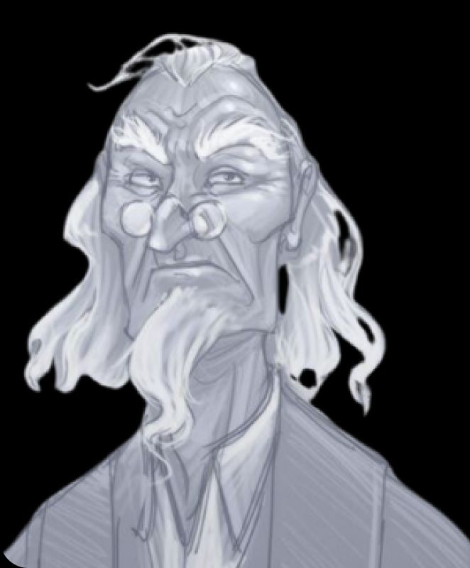
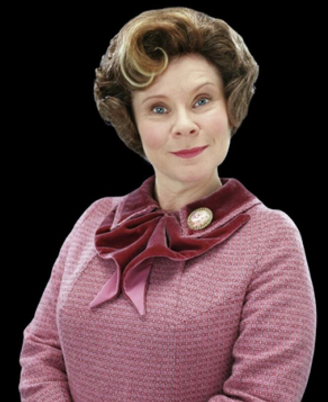
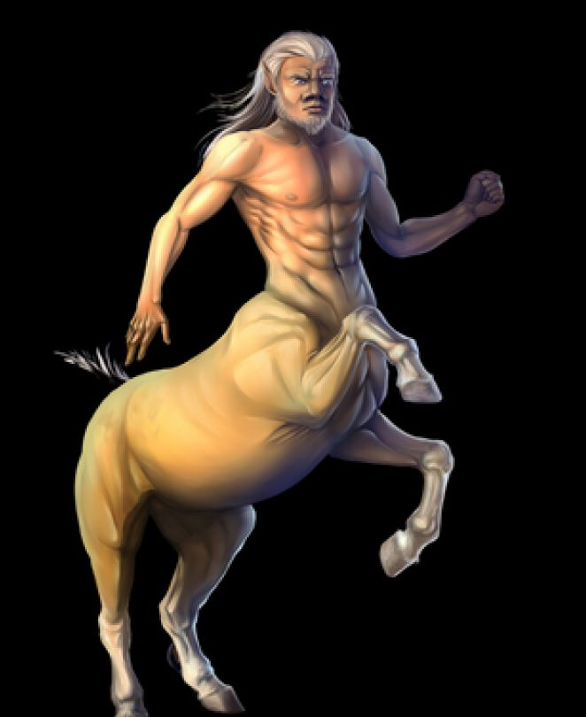

O Diretor de Hogwarts desde algumas décadas antes da criação da Ordem da Fênix. Ele recebeu muitos títulos, muitos dos quais foram removidos pelo Ministro da Magia Cornelius Fudge depois que ele acusou Dumbledore de conspirar para assumir o Ministério.
Moody é nomeado professor de Defesa Contra as Artes das Trevas em “Cálice de Fogo”. Um ex-Auror, ele ganhou seu apelido pelo olho mágico que usa para substituir o que perdeu no cumprimento do dever. No final do livro, Moody é revelado como um impostor, Barty Crouch Jr., que havia capturado o verdadeiro Moody um dia antes do início do semestre como parte de um plano para entregar Harry a Voldemort para ajudar em sua ressurreição. Moody reaparece na série como um membro ativo da Ordem da Fênix, mas nunca ensina. Ele é morto em “Relíquias da Morte”.
A professora esteve presente em muitos eventos importantes ao longo do tempo de Harry Potter em Hogwarts. No ano letivo 1992-1993, o professor estava presente na descoberta de um estudante petrificado, Justino Finch-Fletchley, e ajudou a transportá-lo com Fílio Flitwick, o mestre dos feitiços, para Madame Pomfrey na Ala Hospitalar.
Amet minim mollit non deserunt ullamco est sit aliqua dolor do amet sint. Velit officia consequat duis enim velit mollit. Exercitation veniam consequat sunt nostrud amet. Amet minim mollit non deserunt ullamco est sit aliqua dolor do amet sint. Velit officia consequat duis enim velit mollit. Exercitation veniam consequat sunt nostrud amet.
A professora de Estudos dos Trouxas antes do sétimo ano de Harry Como seus ensinamentos sobre os trouxas deram uma impressão geral favorável a eles, chegando a escrever um editorial elogiando os trouxas no Profeta Diário, ela entra em conflito com os Comensais da Morte, cuja filosofia afirma a supremacia dos sangues puros. Ela se torna prisioneira de Lord Voldemort no sétimo livro; ele a tortura e a mata antes de alimentá-la com Nagini.
Amet minim mollit non deserunt ullamco est sit aliqua dolor do amet sint. Velit officia consequat duis enim velit mollit. Exercitation veniam consequat sunt nostrud amet. Amet minim mollit non deserunt ullamco est sit aliqua dolor do amet sint. Velit officia consequat duis enim velit mollit. Exercitation veniam consequat sunt nostrud amet.
Professor de Defesa Contra as Artes das Trevas em “Harry Potter e a Ordem da Fênix” (quinto ano de Harry). Foi nomeada pelo Ministério da Magia para lidar com os rumores sobre o retorno de Voldemort que se estenderam desde do verão anterior. Umbridge extraiu o controle, tornando-se a primeira e única Alta Inquisidora de Hogwarts, e brevemente Diretora depois que Dumbledore assumiu a responsabilidade pela Armada de Dumbledore.

O professor de Feitiços e Chefe da Casa Ravenclaw por toda a série. Ele também é o diretor do coro da escola na adaptação cinematográfica de Prisioneiro de Azkaban e Ordem da Fênix .
Um centauro , ele viveu anteriormente com seu rebanho na Floresta Proibida . Na Ordem da Fênix , após Sybill Trelawney ser demitida por Dolores Umbridge, ele é contratado por Dumbledore para ensinar Adivinhação em seu lugar. Os outros centauros acharam isso desonroso e o baniram do rebanho. Pelo Enigma do Príncipe , Trelawney foi reintegrada como professora de Adivinhação, mas devido à situação de Firenze com seu rebanho, Dumbledore os fez ensinar Adivinhação simultaneamente até que Firenze retornasse à Floresta após a Batalha de Hogwarts .
O professor de Defesa Contra as Artes das Trevas em Harry Potter e a Câmara Secreta (segundo ano de Harry em Hogwarts). Ele é adorado pelas alunas por seu charme e popularidade no mundo mágico, mas na verdade é um covarde e uma fraude que pegou histórias de outros bruxos e depois apagou suas memórias. Ele perde a própria memória quando um feitiço sai pela culatra e é posteriormente hospitalizado para cuidados de longo prazo.

Um ex-mestre de Poções e chefe da Sonserina por várias décadas antes do nascimento de Harry, Slughorn concorda em sair da aposentadoria e retornar a essas funções no início de Half-Blood Prince . Ele permanece no cargo após a aquisição de Voldemort, mas fica do lado da equipe de Hogwarts contra ele em Relíquias da Morte .
Amet minim mollit non deserunt ullamco est sit aliqua dolor do amet sint. Velit officia consequat duis enim velit mollit. Exercitation veniam consequat sunt nostrud amet. Amet minim mollit non deserunt ullamco est sit aliqua dolor do amet sint. Velit officia consequat duis enim velit mollit. Exercitation veniam consequat sunt nostrud amet.
O professor de Transfiguração e chefe da Grifinória durante toda a série. Vice-diretora durante os seis primeiros romances. Diretora temporária quando Dumbledore foi demitido da Câmara Secreta . Diretora temporária após a morte de Dumbledore em Enigma do Príncipe . Revelada como a diretora em Cursed Child.
Professora de Herbologia e chefe da Casa Hufflepuff durante toda a série. Ela ocupou o cargo por anos e ocupou o cargo após a Batalha de Hogwarts até se aposentar e ser substituída por Neville Longbottom que, na época do epílogo, é considerado a professora de Herbologia.
Madame Papoula Pomfrey, matrona na Escola de Magia e Bruxaria de Hogwarts. Uma enfermeira muito competente, depois de ter estado na posição por, pelo menos, o último trimestre do século 20. Madame Pomfrey é muito possessivo dos pacientes sob seus cuidados na Ala Hospitalar. Ela é proficiente em sua área de especialização, Magia de Cura. Ela lutou na Batalha de Hogwarts, a batalha final da Segunda Guerra Bruxa e foi visto após a batalha tratando os feridos.
Foi professor de Estudo dos Trouxas, mais tarde ele se tornou o professor de Defesa Contra as Artes das Trevas durante o ano escolar 1991-1992 . Antes de ensinar DCAT, saiu em busca de Lord Voldemort, acreditando que ele poderia conseguir reconhecimento ao encontrá-lo e aprender coisas que garantiriam que ninguém risse dele novamente. No entanto, Voldemort, assumiu o seu corpo, transformando-o em uma temporária Horcrux. Ele morreu ao tentar, em vão, assassinar de Harry Potter.
O professor de Defesa Contra as Artes das Trevas em Harry Potter e o Prisioneiro de Azkaban (terceiro ano de Harry em Hogwarts). Ele é amado pela maioria dos alunos (exceto os da casa da Sonserina) por ser o melhor professor de Defesa Contra as Artes das Trevas. Ele se demite no final daquele ano depois que Snape revela que é um lobisomem. Seu apelido no Mapa dos Marotos é Aluado.
Madame Rolanda Hooch é uma bruxa especializada em Quadribol que trabalhou na Escola de Magia e Bruxaria de Hogwarts, onde atuou como instrutora de Voo, juíza e técnica. Ela aprendeu a voar em sua própria vassoura durante ou antes da Primeira Guerra Mundial (1914-1918) e foi contratada para lecionar em Hogwarts após a sua graduação. Ela sobreviveu à Batalha de Hogwarts e ainda lecionava no ano de 2020, com pelo menos 102 anos.
É um bruxo inglês meio-gigante. Professor de Trato das Criaturas Mágicas desde o terceiro ano de Harry em Hogwarts, tem o hábito de apresentar aos alunos criaturas perigosas, que considera inofensivas. Em seu terceiro ano em Hogwarts foi incriminado por Tom Riddle pelo crime de reabrir a Câmara Secreta e usar sua Acromântula de estimação para atacar inúmeros nascidos trouxas e, eventualmente, matar um deles. Com sua varinha quebrada após sua expulsão, Hagrid foi treinado como guarda-caça de Hogwarts e teve a permissão para viver nos terrenos da escola a pedido de Alvo Dumbledore.
O professor de Trato das Criaturas Mágicas desde que Armando Dippet (predecessor de Dumbledore) era o diretor. Ele finalmente se aposenta para "passar um tempo com seus membros restantes", e seu lugar é eventualmente ocupado por Hagrid em Prisioneiro de Azkaban.
Bruxa mestiça e professora de Adivinhação. Ela é tetraneta da célebre Cassandra Trelawney, que também foi uma vidente. Foi Sibila quem fez a profecia sobre Lorde Voldemort durante sua entrevista de emprego com Alvo Dumbledore. No final do ano letivo 1993-1994, ela também previu a fuga de Pedro Pettigrew e o retorno do Lorde das Trevas. Já no ano letivo 1995-1996, ficou muito angustiada com Dolores Umbridge, que lhe dispensou e tentou bani-la do Castelo de Hogwarts, embora Dumbledore tenha intervindo permitindo que Sibila ficasse no local. Quem substituiu a professora foi o centauro Firenze.Sibila participou da Batalha de Hogwarts, jogando bolas de cristal nas cabeças de vários Comensais da Morte e, posteriormente, cuidando de mortos e feridos junto de Padma Patil.
O Professor Severo Snape é um bruxo mestiço, filho da bruxa Eileen Snape e o trouxa Tobias Snape. Durante sua vida, Severo Snape foi Mestre de Poções (1981–1996), o professor de Defesa Contra as Artes das Trevas (ano letivo 1996-1997) e Diretor (ano letivo 1997-1998) em Hogwarts, que frequentou como aluno de 1971 a 1978. Ele também foi um membro da Ordem da Fênix, e teve um papel muito importante em ambas Guerras Bruxas contra Lord Voldemort.